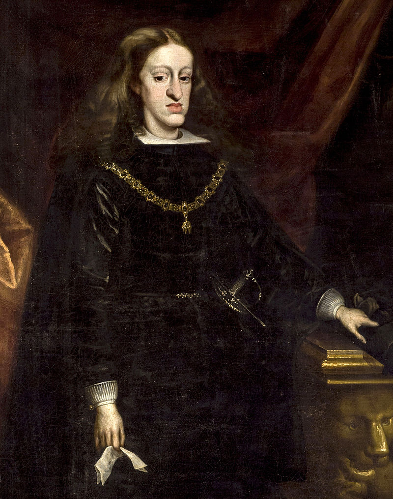
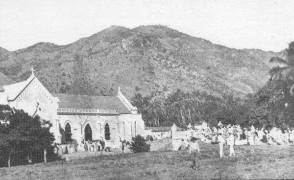
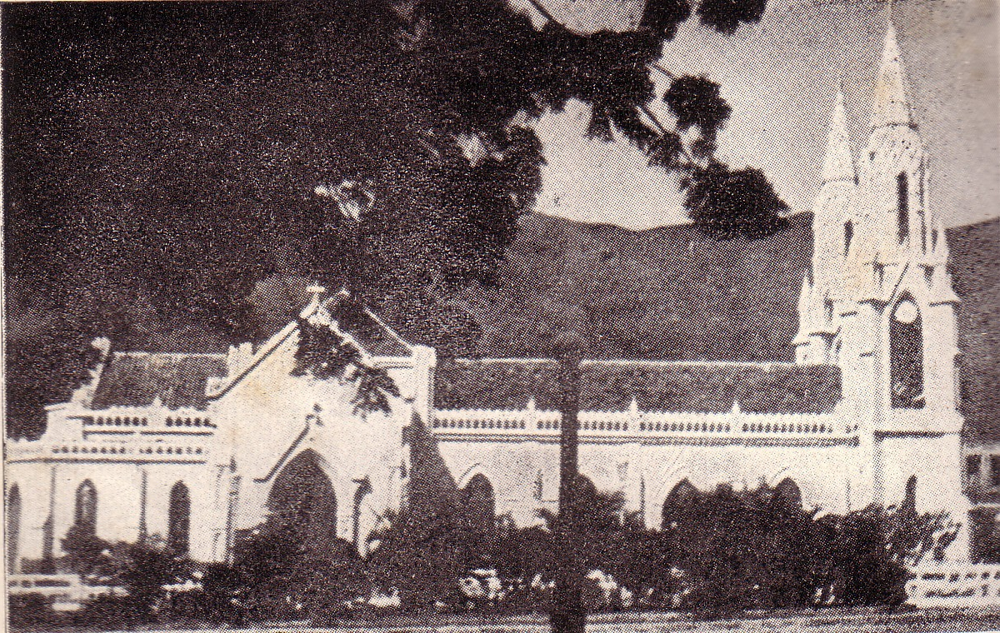
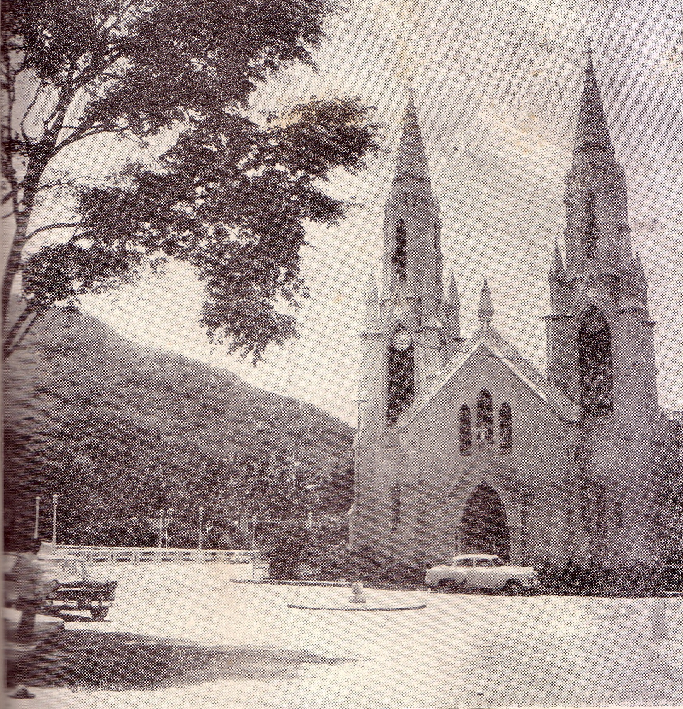

La construcción del hermoso templo, en honor a la santísima Virgen del Valle, que hoy conocemos, se inicio el 3 de febrero de 1894, estando de cura párroco el Pbro. Joaquín Rivas.
Con anterioridad, en el largo periodo de tiempo que va desde de 1528 hasta 1894, el templo anterior, llámese ermita o capilla, ocupó diferentes cambios en su estructura y en sus cimientos. Como es lógico suponer, por espacio de varios siglos fue tan solo una pequeña ermita, sujeta durante los años 1585 y 1605 a varias reformas, reconstrucciones y ensanches; aún así nunca llegó a darle cabida, ni tan siquiera a los feligreses del lugar.
La Ermita de El Valle permaneció por muchos años sin párroco, pues los diezmos solo alcanzaban para pagar al de La Asunción; los servicios religiosos y los sacramentos se ejercían esporádicamente, aunque tradicionalmente se celebraban las festividades solemnes a la Virgen de El Valle. Según expresa el Hno. Nectario María en su obra Un Gran Santuario Mariano de Venezuela: La Virgen del Valle de Margarita [?], durante el año 1576, en visita pastoral que hiciera a Margarita Fray Manuel de Mercado, Obispo de Puerto Rico, sede diocesana a la cual pertenecía la Isla de Margarita, al enterarse que los indios Guaiqueríes estaban dispersos, sin recibir formación espiritual alguna, ordenó la creación y organización de tres centros poblacionales de doctrina, al frente del cual siempre estaría un sacerdote. Esta medida vino a favorecer a la Ermita de El Valle, al cual correspondió uno de estos centros. Esto explica el porqué, al correr de los años, los Guaqueríes siempre han estado al lado del Santuario y de la Virgen, dando origen a un sinnúmero de leyendas en torno a ella.
En su obra, el Hno. Nectario María [?] también relata que al padre Alonso de Saavedra Escobar, designado en el año 1585 por Fray Diego de Salamanca, Obispo de Puerto Rico para aquella época, le correspondió el grandioso honor de ser el primer capellán fijo que tubo la Ermita de El Valle, com prometiéndose los vecinos a pagarle trescientos (300) pesos anuales para sus gastos de manutención. De esa época data la primera restauración de que se tenga noticia.
Dando continuidad al orden cronológico de capellanes y párrocos que tuvo la ermita, según expresa el Hno. Nectario María en su obra [?], el Pbro. Francisco Velazco, de grato recordatorio por sus buenas obras a favor de la Virgen de El Valle, fue designado como Capellán de esta ermita por el vicario de la isla, Diego Núñez Brito.
Tal vez por falta de recursos para el mantenimiento, de iniciativa o de interés de las autoridades gubernamentales en tomar la decisión de construir una iglesia que se ajustara a las necesidades de la época, la Ermita de El Valle, durante esos trescientos sesenta y seis años que transcurren entre 1528 y 1894, siempre estuvo adoleciendo de debilidades en su infraestructura, que, entre reparaciones, restauraciones, ampliaciones, ensanches y nuevas bases, vio transcurrir su devenir, sin que nunca se hubiese tomado una decisión trascendental.
Durante el año 1605, el Sr. Diego García, mayordomo de la ermita y vecinos de La Asunción, dieron inicio de su propio peculio, a la nueva reconstrucción; en esta ocasión tampoco los vecinos se hicieron esperar, contribuyendo en la medida de sus posibilidades, a cubrir los gastos. También el referido mayordomo no descansó, en sus gestiones de lograr ante las autoridades, el pago de los trescientos pesos ofrecidos al Capellán, compromiso que el pueblo de El Valle, la mayor parte de las veces se veía imposibilitado de cumplir [?].
También cuenta el Hno. Nectario María en su obra que el rey Carlos II de España, "El Hechizado", dio la orden de dotar de ornamentos sagrados a las iglesias de doctrina en la isla de Margarita. Fue así que, con la iglesia repleta de fieles, el 8 Septiembre de 1699 se bendice el primer sagrario, copón y custodia de la Ermita de El Valle por parte del Vicario de la isla y el Párroco de el Valle; acto que presidió el entonces gobernador Diego Suniaga y Orbea, quien figura inscrito como el primer asociado de la Hermandad del Santísimo Sacramento [?]. En su comunicación al Rey sobre estos actos religiosos, de 20 de septiembre de 1700, Suinaga y Orbea no olvida mencionar que la iglesia de la Virgen del Valle es "la más acomodada para mantener lámpara encendida", como es del uso ante el Santísimo Sacramento. Desde entonces la Patrona Margariteña no estuvo más sola.

En el año 1728, estando de párroco de la ermita, el Pbro. Phelipe Martínez, ante el estado lamentable de ruinas en que se encontraba nuevamente el templo, emprendió su reconstrucción completa, sobre nuevas y más amplias bases; además de dirigir personalmente las obras, de inmiscuirse directamente en los trabajos, se empeñó en más de dos mil pesos que requirió para culminar la nave central, la capilla mayor y la sacristía, pese a lo apartado por los feligreses que siempre estuvieron atentos a sus suplicas, exhortaciones, plegarias y ruegos [?].

La construcción del nuevo santuario que exigía el siglo XX que se iniciaba, disponía de ocho mil (8000,00) Bolívares, donados por la gobernación del entonces estado Miranda, al cual pertenecía la isla de Margarita. Contaba además con la presencia, la voluntad y el empuje de uno de los más celosos guardianes que ha conocido este templo.
Cuarenta años a la cabeza de esta parroquia no fueron suficientes para que el Pbro. Mons. Eduardo de Jesús Vásquez, benemérito y Santo Sacerdote, actuando con dedicación, tesón, constancia y continuidad, viese terminada la obra que con tanto amor y sacrificio le habían dedicado sus hijos a la Virgen de sus amores.
Loable y justo es reconocer y rendirle tributo, aunque tan solo sea señalado los nombres de quienes participaron en la demolición de la antigua ermita y construcción de la nueva. Estamos seguros que Dios en su infinita misericordia, desde hace muchos años, les habrá retribuido con creces esas bondades, sacrificios y hasta desprendimientos. Nos referimos al operario de albañilería, Sr. León Fermín, sus ayudantes Placido Marcano y Hermenegildo Espinoza y otros que no por dejar de mencionar sus nombres tienen menos importancia. Mención especial merece Don Jerónimo Ortega, del quien se dice fue un luchador incansable y fatigado, quien a expensas de su propio peculio hizo lo imposible para que la obra se llevara a feliz término [?].
No debemos olvidar a Carlos Monagas, ingeniero director de la obra y José Lorenzo Narvaez, quien en viaje de regreso de Trinidad vino cargado con madera, pizarra, y vidrios de colores para puertas, techos y ventanas. También los feligreses con su generosa colaboración aportaron el faltante para culminar la parte ornamental [?].
Honor a quien honor merece, nos dice la conseja, nuestro querido e ilustrísimo profesor. Alberto Heredia Piñerua, forjador de juventudes, humildemente no le gusta que lo llamen cronista; sin embargo, en lo referente a la historia del templo y de la Virgen, para nadie es un secreto está muy bien informado, dado que su padre, Vicente Heredia Marcano, vivió de cerca todo ese proceso. “por el sabemos que entre 1894 y 1895 se construyó la nave central, los arcos de crucero y la cúpula; en el año 1897 los muros de los brazos de la cruz y en el año 1900 el prebisterio. También el 8 de Septiembre de ese año, Monseñor Antonio Maria Duran, obispo de la Diócesis de Santo Tomás de Guayana, bendice los trabajos adelantados en el santuario [?].
Entre los años 1901 y 1904 se bendice el bautisterio, el púlpito, la pintura del cielo raso, la pintura general de la iglesia y los cuadros del vía crucis. En estos actos, preñados de júbilo y solemnidad, intervinieron con sendas piezas oratoria, los prelados Silvino Marcano Malaver y Juan Bautista Cortes, Arzobispo de Caracas [?].
Para el año 1905, los ingenieros Rolingson y Monagas trazaron los planos del coro y de las torres; sucesivamente en el año 1906 se adquirieron los juegos de calendabro de plata del altar y se inician los trabajos de la sacristía [?]. Nuevamente el 8 de Septiembre de ese año, monseñor Durán bendice y consagra las campanas.
Sin perder la continuidad, entre los años 1909 y 1918 se levanta la torre del campanario, se bendice la casa parroquial, la Torre del Reloj pavimento del mosaico, el coro, el reloj y la torre del campanario [?]. También en estos actos la presencia de Monseñor Durán en la liturgia le dio la solemnidad esperada y necesaria en estos casos.
Cabe señalar que la bendición del reloj y de la torre del campanario le correspondió al Dr. Mons. Sixto Sosa, sucesor de Durán en la diócesis de Santo Tomas de Guayana.
Fallecido el Pbro. Monseñor Vásquez, le correspondió al recién ordenado sacerdote, Crisanto Mata Cova, encargarse en 1940 de la parroquia y continuar con los trabajos, bastante avanzados del templo, a fin de armonizar las obras internas con las áreas externas, de tal manera que conformaran un conjunto integral, compuesto por jardines, gruta, seminario, casa para el abrigo de peregrinos, avenidas, estatuas y demás ornamentación es que le diera el realce y la esbeltez necesaria, digna, de ser el hogar de la madre de Dios, más antigua del continente.

[?]">
[?]">Pudiéramos suponer que en los ocho años que permaneció de párroco Monseñor Crisanto Mata Cova, terminó de construir lo que pudiéramos llamar los retoques finales de la obra; por lo tanto, estamos hablando de cincuenta y cinco (55) años de trabajo continuo, quizás con breves contra tiempos.
Hacemos referencia a estos datos para resaltar que de los ciento diecisiete años que cumplió este santuario, desde los mismos momentos que se inicio la construcción, solo la mitad pudieran considerarse libre de mortificaciones, sobre saltos y ajetreos.
Sin embargo, sería injusto dejar de reconocer que durante el periodo en el que el Pbro. Juan Heredia Piñerúa estuvo al frente de la iglesia se continuó realizando algunas mejoras en las áreas internas y externas. En ese lapso se construyó el camerino de la Virgen, los jardines de la Casa Parroquial y del seminario, así como la ampliación y reestructuración de la Sacristía.
Todos cuanto tuvimos la oportunidad de conocer, asistir y participar en cualquier de los actos litúrgicos que se realizaban por allá por los años 40 y 50 del siglo pasado, “Época de oro”, contemplamos su majestuosidad, su calidez y su belleza; aspectos estos que le daban mayor solemnidad, invitando al creyente a asistir con alegría, respeto, veneración y fe. Esta lectura nos lleva a reflexionar y nos obliga a realizar un comentario sano con el propósito de que no volvamos a caer en errores semejantes.
Hemos visto los sacrificios, los desvelos, la buena voluntad, la pasión, la entrega total, el amor y cariño que volcaron todas las personas, autoridades civiles y religiosas, prelados y feligreses en general, en obsequiar a la madre de Dios un Santuario digno de su linaje; sin embargo, sentimos que las actuales generaciones no la hayan valorado de la misma forma.
Durante las reparaciones de que fue objeto el templo en los inicios de la década de los años 70, nadie cuestionó el despojo de sus obras de arte, de sus pinturas, de su valioso púlpito, de sus lámparas y de sus imágenes.
La lógica nos indica que por ser la Virgen y el Templo un símbolo vivo de todos Los Orientales y Margariteños, se requería solicitar su permiso. También creemos que el manejo del Santuario, su infraestructura, sus ornatos y demás bienes, deben estar a sometidos a una normativa y unas disposiciones claras, de tal manera que todos los párrocos le respeten al pie de la letra y no tenga el pueblo que estar soportando los constantes cambios que a cada párroco se le antoje.
Debo señalar como margariteño, vallero, creyente y gran devoto de la Santísima Virgen, a quien de niño entregue mi corazón, que veo con tristeza y dolor el estado lamentable de deterioro en que actualmente se encuentra el templo, pese a los enormes recursos invertidos para su restauración, según el plan de rescate iniciado el año 2001; para nadie es un secreto, sabrán las palabras.
Si retrocedemos en el tiempo al año 1894, en este momento nos encontramos en la misma encrucijada, con la diferencia de que en aquel entonces había voluntad y disposición para emprender una nueva obra. Ahora solo nos alienta la esperanza de que algún día se recuperará este patrimonio histórico para la posteridad.
Recordemos que durante las décadas de los años 60 y 70 del siglo pasado ya se vislumbraba la preocupación secular, respecto al tamaño y su mantenimiento; por tercera vez salió a relucir una de las debilidades más grandes que desde siempre ha tenido nuestro templo, referida a su limitado tamaño, incapaz de darle cabida a un cúmulo creciente de creyentes y visitantes. Ya para esos años, los cura párrocos Eleazar y Alicio García Fermín, habían apreciado la magnitud del problema; el primero de ellos, en el año 1961, con motivo de las bodas de oro, una campaña de recolección de fondos a nivel nacional, denominada el millar de los miles, con el fin de construir un complejo arquitectónico integral que incluía Basílica, centro dispensador de salud, centros de formación,, centros recreativos y un funicular de atractivo turístico que uniría este complejo con el cerro El Piache. Valdría la pena revisar este proyecto y su factibilidad. Sea cual fuese la alternativa que las circunstancias y el desarrollo Regional de Margarita contemple en su planificación, no debemos olvidar que éste para el vallero siempre ha estado muy ligado a su vida, a su formación y a su personalidad. No olvidemos que tan solo nos separan pocos meses para celebrar los cien (100) años de la coronación canónica de la Virgen del Valle.
En su proceso evolutivo la iglesia de la virgen pasó de ser una simple ermita a un templo de un santuario a una Basílica Menor, honor concedido por su santidad, el Papa San Juan Pablo II, el 8 de Diciembre de 1995, a solicitud del Obispo Diocesano Monseñor Cesar Ramón Ortega.